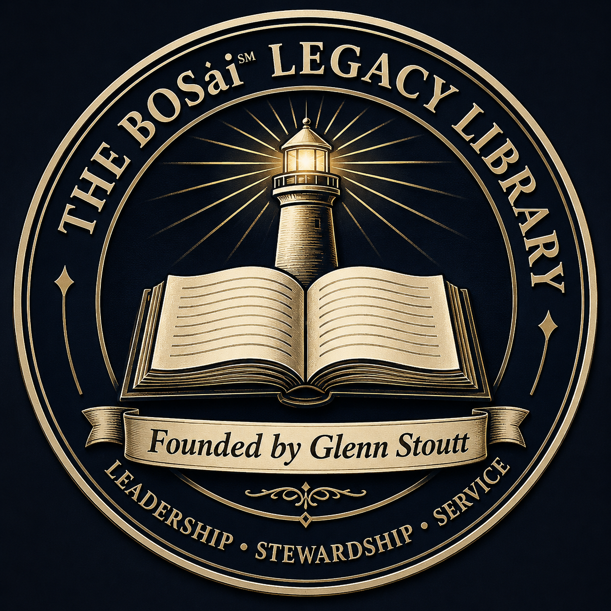
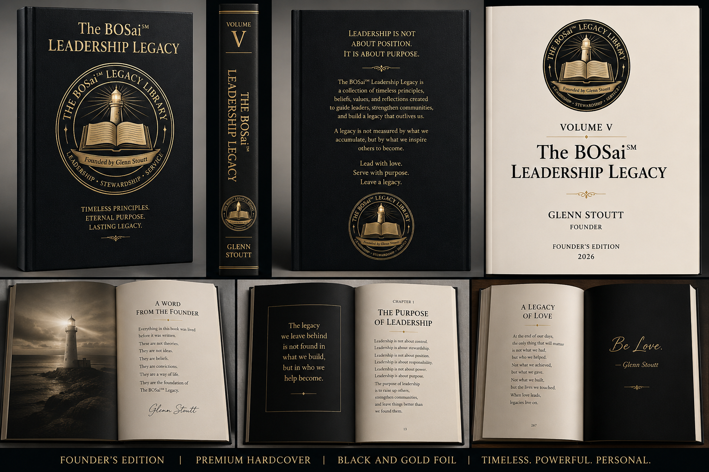
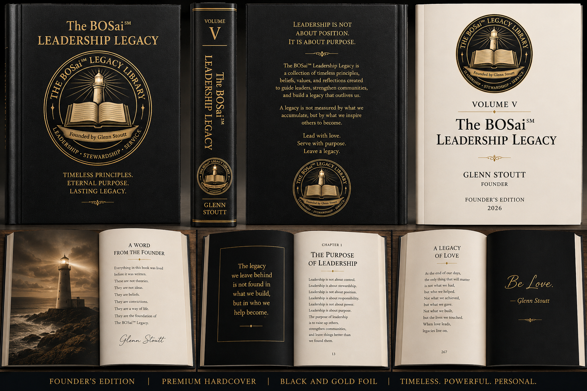

A professional leadership, stewardship, service, operations, financial intelligence, enterprise management, and legacy library created by Glenn Stoutt, founder of Stoutt Property Management and creator of the BOSai℠ Method.

The BOSai℠ Legacy Library documents the philosophy behind the BOSai℠ ecosystem: leadership before technology, stewardship before authority, transparency before control, and service before self-interest.
Executive leadership framework for community associations.
View PDFOperational framework supporting modern community management.
View PDFFinancial systems supporting responsible governance.
View PDFFramework for building professional management organizations.
View PDFThe personal leadership and legacy philosophy behind BOSai℠.
View PDF
Volume V preserves the leadership and legacy philosophy behind the entire BOSai℠ Library. It reflects on stewardship, service, mentorship, character, faith, hope, and love.